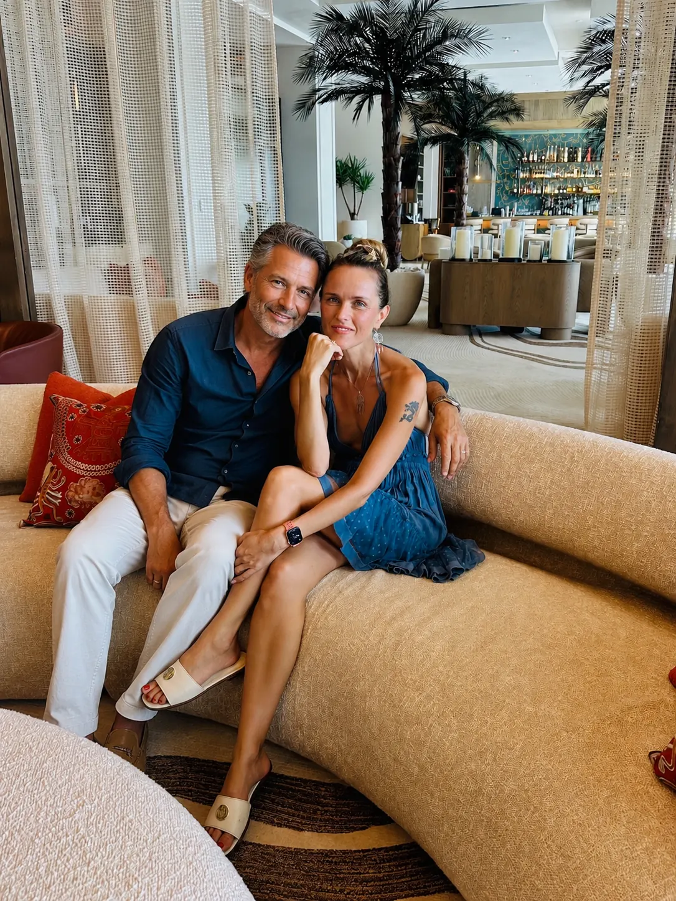

The Course
The Dating Method
For women 40+ starting over after a long relationship, who want to date with intention, not desperation.
A Note From Me
This course is everything I learned in the last 3 years. I wish I had it when I started my dating journey and when I started building my dream life. I took all the mistakes, all the lessons, all the wisdom and packaged it up for you — so you don't have to walk this road alone. ❤️
This course is for you if…
- You left a long relationship and the idea of dating feels overwhelming
- You've tried dating apps and it felt random, chaotic, or demoralizing
- You're tired of advice from married friends who haven't dated in 15 years
- You want to feel confident and feminine on dates, not like you're auditioning
- Want a system that feels safe, structured, and — actually — enjoyable 💕
You've Been Told to "Put Yourself Out There." But No One Told You How to Do It Right.
You're divorced. Or single after years of giving everything to a man who didn't see you. Or stuck in a relationship that feels like a slow death.
Maybe you tried the apps, had some bad experiences, and gave up. It feels confusing, humiliating, and exhausting.
You gave up on magic. On passion. On feeling chosen.
Now you're home alone with Netflix and wine, watching other women live the life you thought was over for you.
And you need someone who's been exactly where you are — and came out the other side.
The Curriculum
What's inside
Part 0 — Leaving (optional)
Part 1 — Become Her
Part 2 — The System
You also get
- First-date checklist
- Red-flag / green-flag playbook
- "My Rules" worksheet
- Profile audit template
- 1-year access + all future updates
Who teaches this
Masha Blair
I left a 17-year marriage at 44 and reinvented my life. I can't afford a $20,000 matchmaker, and neither can most of the women I talk to — so I navigated online dating on my own. More than 60 intentional dates. I'm an engineer: where other women see chaos, I see a system. I packaged every lesson, every failure, every win into The Dating Method, so you don't have to walk this road alone.
In Their Words
What women say after talking with me
From my 1:1 conversations with women — not course results. The course opens in January.
I used to worry what my friends and people on social media will think about me going on dates. I used to think that the whole world was watching me making a fool out of myself. Masha, after I talked to you, I don't care anymore. I'm done seeking validation in others.
Masha, every time we talk, you lift my inertia and procrastination with online dating. I knew for a while that I should start dating and take it seriously, but I just didn't have any energy because life is busy and my dating experience has been exhausting at best. You gave me a boost I needed to stop waiting for a perfect moment and take simple action. Thank you, beautiful! You are my inspiration. 💜
Masha, I'm DM'ing you because I need to tell you: I have been in therapy for TWO YEARS and one conversation with you moved me further than half of those sessions. I don't know how you do it but please don't stop.
Good to Know
Questions, answered
I'm not divorced. Is this for me?
Yes — if you've been quiet for a while, whatever the reason got you there. Long single stretches, dead relationships, bad or confusing dating experiences. The Method starts from the same place.
Is this just about apps?
No. Apps are just one channel. The Method is about the woman first. That's what makes it work in person, at events, and yes — on the apps too. It opens you up to the world. 🌹
How long does it take?
Move at your own pace — you have a full year of access. Most women complete all the modules and do the work in 1–2 weeks. Some woment take much longer. Once you understand my philosophy, you'll feel empowered to keep going on your own, with confidence and clarity. 💎
What does it cost, and when can I join?
The founding price is $147 from Tuesday, January 5 to Tuesday, January 19, 2027. From Wednesday, January 20 to Sunday, January 31, 2027, it's $297. After January 31, enrollment closes.
What if I change my mind?
You get a full refund within 3 days of purchase. That's a refund on your purchase, not a results guarantee — no honest course can promise you a partner.
Do I get support?
Yes. Everyone who joins in January — founding or regular price — gets my private Telegram group. I'm there 5 days a week during business hours in January to answer your questions. 💬
What if I don't finish in January?
You keep access for a full year, plus all future updates. Closing on January 31 means closed to new students — not that your access ends.
What if I'm scared?
Good. That means you're finally paying attention to what you want. Everything you want in life is just outside your comfort zone. 💕
The Investment
Ready to start living now?
Founding price · January 5–19, 2027
Then $297 until doors close January 31.
- 1-year access
- 3-day full refund
- January Telegram group
Waitlist members get first access and a reminder before founding pricing ends. 🔥